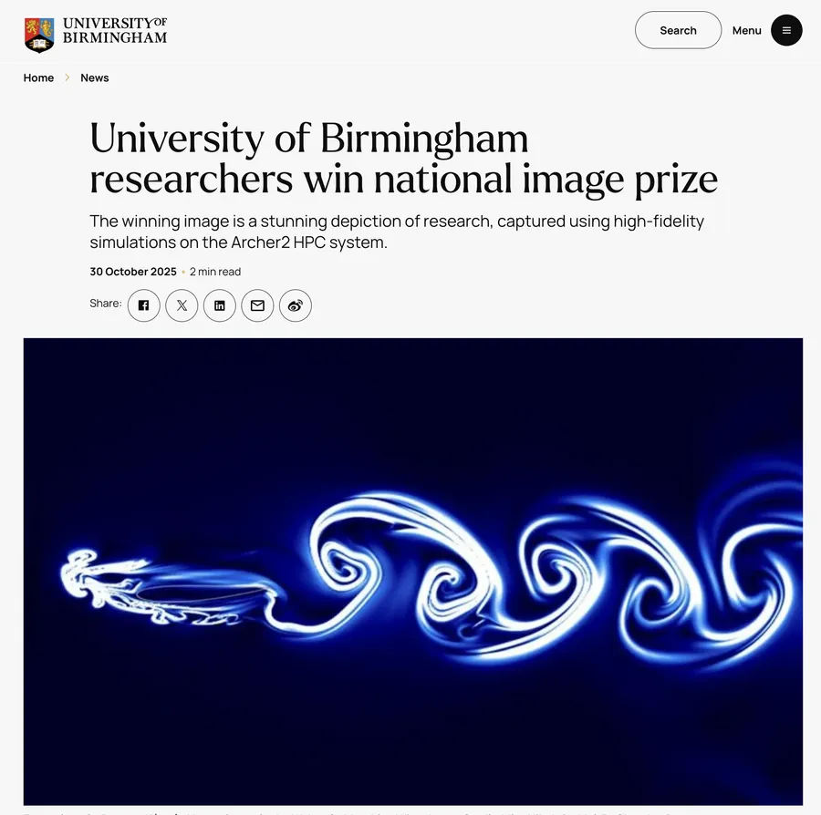
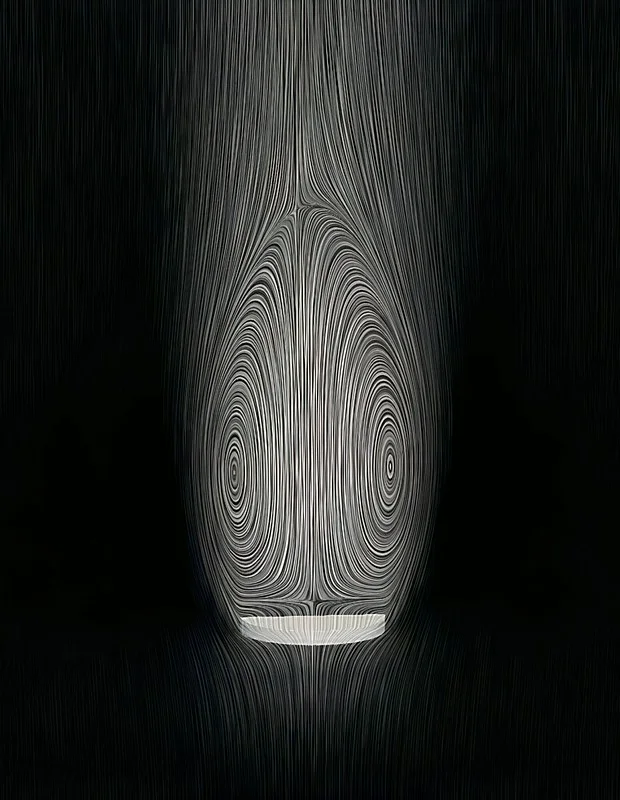

Press & Media
News stories and features about BioFSI Lab research.

University of Birmingham News · 30 Oct 2025 University of Birmingham researchers win national image prize PhD student Hibah Saddal and Dr Chandan Bose won the EPCC ARCHER2 Best Image Prize for “Formation of a Reverse Kármán Vortex Street in the Wake of a Morphing Wing”. The image shows a fully flexible aerofoil whose passive morphing reduces gust effects, simulated on the ARCHER2 national supercomputer by coupling OpenFOAM with CalculiX. It was Dr Bose’s second consecutive year of recognition in the competition. Read the article
ARCHER2 News · Oct 2024 Winning Early Career Researcher (Dandelion Seed Wakes) Dr Bose won the 2024 ARCHER2 Early Career Researcher award for “Separated Vortex Ring above a Three-Dimensional Porous Disc”, a simulation of how highly porous dandelion seeds form a stable separated vortex ring in their wake, and how uniform permeability shapes their aerodynamic stability. Read the announcementAll Press & Media
- Oct 2025
University of Birmingham researchers win national image prize – University of Birmingham News. Hibah Saddal and Dr Chandan Bose won the EPCC ARCHER2 Best Image Prize for their research on morphing wings.
- Oct 2024
Winning Early Career Researcher (Dandelion Seed Wakes) – ARCHER2 News. Dr Bose won the 2024 ARCHER2 Early Career Researcher award for his scientific visual “Separated Vortex Ring above a Three-Dimensional Porous Disc”. The simulation studied how biological seeds such as dandelions travel through the air: their very high porosity (> 0.9) creates a stable separated vortex ring in the wake that keeps them stable in flight, and the ARCHER2 simulations mapped this airflow to show how uniform permeability influences aerodynamic stability. View the 2024 gallery.
- 2021
Chandan Bose is one of the 121 recipients of the FNRS Postdoctoral Fellowship 2021 – News, University of Liège.
- 2021
Chandan Bose has been chosen as the reviewer of the year by the ASME – Dept. of Aerospace & Mechanical Engineering News, University of Liège.
- 2021
Chandan Bose’s simulation featured on the cover page of the OpenFOAM Journal – Dept. of Aerospace & Mechanical Engineering News, University of Liège.